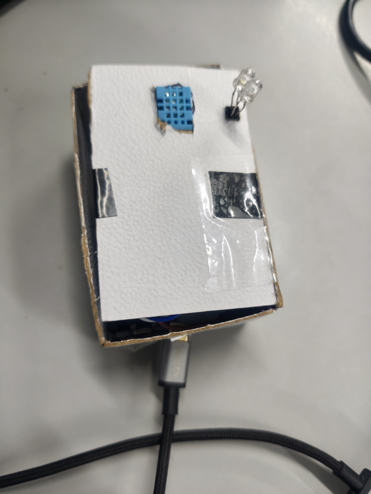

Manual visual paso a paso para el armado físico del hardware en protoboard. Conexión ordenada de microcontrolador ESP32 DevKit, lector RFID RC522, sensor ambiental DHT11, LEDs indicadores y buzzer acústico.
| Cant. | Componente | Especificación / Función |
|---|---|---|
| 1 | ESP32 DevKit V1 | Microcontrolador WiFi 2.4 GHz (38 o 30 pines) |
| 1 | Módulo RC522 | Lector RFID 13.56 MHz por SPI (¡Alimentación a 3.3 V!) |
| 3 | Tarjetas RFID | Tags Mifare 1k (identificadas como A, B y C) |
| 1 | Sensor DHT11 | Sensor de temperatura y humedad (azul 3 pines / 4 pines) |
| 1 | LED Verde 5 mm | Indicador de acceso autorizado (GPIO 25) |
| 1 | LED Rojo 5 mm | Indicador de acceso denegado / alerta (GPIO 26) |
| 2 | Resistencias 220 Ω | Limitadoras para LEDs (Rojo-Rojo-Café-Dorado) |
| 1 | Resistencia 10 kΩ | Pull-up para sensor DHT si aplica (Café-Negro-Naranja) |
| 1 | Buzzer activo | Señal sonora de eventos y aforo (GPIO 27) |
| 1 | Protoboard 830 pts | Base de inserción sin soldadura con rieles laterales |
| 1 jgo. | Cables Dupont | Jumpers Macho-Macho y Macho-Hembra surtidos |
| 1 | Cable USB de datos | Micro-USB o USB-C para programación y energía |

Siga rigurosamente estas cinco directrices antes de insertar cables en la protoboard para evitar daños irreversibles a los componentes.
Jamás realice o modifique conexiones con el ESP32 energizado. Un puente accidental entre pines de 5 V, 3.3 V o GPIOs activos puede quemar compuertas lógicas de forma instantánea. Desconecte siempre el cable USB de la computadora antes de manipular jumpers.
El pin 3.3V del módulo RC522 debe recibir únicamente 3.3 V desde el riel regulado del ESP32. Conectarlo a los pines VIN o 5V de la placa someterá el chip Philips MFRC522 a sobretensión y lo destruirá de forma permanente e irreparable.
Todos los módulos (ESP32, RC522, DHT11, LEDs y Buzzer) deben tener sus terminales de tierra interconectados al mismo riel negativo (azul/negro) de la protoboard. Sin una referencia común de 0 V, las lecturas oscilarán y las señales lógicas SPI fallarán.
Los LEDs son diodos con polaridad estricta: el ánodo (+) (pata larga) va hacia el GPIO del ESP32 mediante la resistencia de 220 Ω; el cátodo (−) (pata corta y lado plano del reborde) va a GND. Nunca conecte un LED directo sin su resistencia limitadora.
El radio integrado del ESP32 opera exclusivamente en el espectro 802.11 b/g/n a 2.4 GHz. No es compatible con redes de 5 GHz ni con portales cautivos empresariales con página de autenticación web. Para pruebas use un punto de acceso móvil o canal de 2.4 GHz en su módem.
Interconexión general entre ESP32 DevKit, lector RC522, sensor DHT11, LEDs indicadores y Buzzer con código de colores normalizado.
Inserción en protoboard, mapeo de las dos filas de pines (DevKit V1 38 pines) y distribución de 3.3 V y GND común.
+).−).| Pin ESP32 | Destino Protoboard | Cable | Función |
|---|---|---|---|
| 3V3 | Riel Positivo (+) |
Rojo | Suministro de 3.3 V DC regulados |
| GND | Riel Negativo (−) |
Negro | Retorno y tierra común (0 V) |
Riel Sup. + |
Riel Inf. (+) |
Rojo | Puente de distribución de 3.3 V |
Riel Sup. − |
Riel Inf. (−) |
Negro | Puente de distribución de tierra |
La ilustración muestra el mapa oficial de pines para el formato ESP32 DevKit V1 de 38 pines. En modelos de 30 pines (NodeMCU-32S compacto), las posiciones físicas de los pines difieren (por ejemplo, los pines de tierra y alimentación están en esquinas distintas). Siga siempre las etiquetas grabadas en la serigrafía de su placa física para localizar cada GPIO.
Cableado del bus SPI de alta velocidad para detección y lectura de identificadores de tarjetas Mifare 1k.
| Pin RC522 | GPIO ESP32 | Color | Señal en Firmware |
|---|---|---|---|
| SDA / SS | GPIO 5 | Azul | #define SS_PIN 5 |
| SCK | GPIO 18 | Azul | #define SCK_PIN 18 |
| MOSI | GPIO 23 | Azul | #define MOSI_PIN 23 |
| MISO | GPIO 19 | Azul | #define MISO_PIN 19 |
| IRQ | Sin Conexión | — | No utilizado (NC) |
| GND | GND | Negro | Riel negativo común |
| RST | GPIO 22 | Azul | #define RST_PIN 22 |
| 3.3V | 3.3V | Rojo | ¡PELIGRO: Solo 3.3 V! |
Compruebe dos veces que el pin 3.3V del RC522 está conectado a la línea de 3.3 V y jamás al pin VIN (5 V). Conectar 5 V al RC522 quema el silicio de inmediato.
La falla más frecuente al armar el lector es invertir los cables MOSI (GPIO 23) y MISO (GPIO 19). Si el monitor serie reporta versión 0x00 o 0xFF, intercambie ambos jumpers.
Monitoreo de temperatura y humedad relativa en GPIO 4 con aclaración de variantes (módulo 3 pines vs sensor 4 pines con pull-up).
| Pin Sensor | Nombre | Destino ESP32 / Riel | Color Cable |
|---|---|---|---|
| Pin 1 / VCC | Alimentación | Riel 3.3V (+) | Rojo |
| Pin 2 / DATA | Señal 1-Wire | GPIO 4 | Verde |
| Pin 3 / NC | No Conectado | Sin conexión | — |
| Pin 4 / GND | Tierra | Riel GND (−) | Negro |
• Módulo de 3 pines (azul con PCB pequeña): Ya cuenta con resistencia pull-up SMD soldada entre VCC y DATA. Conéctelo directo.
• Sensor suelto de 4 pines: Requiere insertar una resistencia de 10 kΩ (Café-Negro-Naranja-Dorado) entre el pin 1 (3.3V) y el pin 2 (DATA) en la protoboard. Sin esta resistencia, la línea queda flotante y produce lecturas erráticas.
En firmware/esp32_aforo/esp32_aforo.ino se define:
#define DHT_PIN 4
#ifndef DHT_TIPO
#define DHT_TIPO DHT11
Si utiliza un sensor blanco DHT22, defina DHT_TIPO DHT22 en config.h sin alterar el pin 4. Si se declara DHT22 con un sensor DHT11 físico, la librería devolverá NaN.
Señalización óptica de validación de acceso y alertas mediante diodos LED con resistencias limitadoras de 220 Ω.
| LED | Terminal | Conexión | GPIO ESP32 | Color |
|---|---|---|---|---|
| LED Verde | Ánodo (+) |
Vía Resistor 220 Ω | GPIO 25 | Verde |
Cátodo (−) |
Directo a Riel | GND | Negro | |
| LED Rojo | Ánodo (+) |
Vía Resistor 220 Ω | GPIO 26 | Naranja |
Cátodo (−) |
Directo a Riel | GND | Negro |
La resistencia de 220 Ω actúa como limitador de corriente. Con 3.3 V de salida y una caída de tensión típica del LED de 2.0 V a 2.2 V, la corriente se mantiene segura a ~5–6 mA. Conectar el LED directo sin resistencia dañará el pin del ESP32 o quemará el diodo.
• LED Verde (GPIO 25): Se activa durante 2000 ms ante una tarjeta autorizada o comando remoto de apertura.
• LED Rojo (GPIO 26): Se activa y destella ante tarjeta no registrada o estado de alarma de sobrecupo.
Emisión de tonos audibles de confirmación (2000 Hz) para acceso autorizado, acceso denegado y alarma de aforo.
| Terminal Buzzer | Polaridad | Destino | Color Cable | Función |
|---|---|---|---|---|
| Pata Larga / (+) | Positivo (+) |
GPIO 27 | Amarillo / Naranja | Señal de activación en tono |
| Pata Corta / (−) | Negativo (−) |
Riel GND | Negro | Retorno a tierra común |
• Buzzer Activo (recomendado en BOM): Contiene circuito oscilador interno. Emite sonido inmediatamente al recibir nivel ALTO o pulso.
• Buzzer Pasivo: Requiere tren de ondas cuadradas continuo mediante PWM (función ledcWrite / tone). Si su buzzer suena muy débil, verifique retirar el sello adhesivo superior.
Inspección visual y validación eléctrica de todas las líneas antes de conectar el cable USB al ESP32.
| Componente | Pin Físico | Pin ESP32 | Color | Nota / Definición |
|---|---|---|---|---|
| Protoboard | Riel (+) | 3.3V | Rojo | Lógica general 3.3 V |
| Protoboard | Riel (−) | GND | Negro | Tierra común unificada |
| Lector RC522 (RFID 13.56 MHz) |
SDA / SS | GPIO 5 | Azul | #define SS_PIN 5 |
| SCK | GPIO 18 | Azul | #define SCK_PIN 18 |
|
| MOSI | GPIO 23 | Azul | #define MOSI_PIN 23 |
|
| MISO | GPIO 19 | Azul | #define MISO_PIN 19 |
|
| RST | GPIO 22 | Azul | #define RST_PIN 22 |
|
| GND | GND | Negro | Tierra común | |
| 3.3V | 3.3V | Rojo | ¡PELIGRO! Nunca 5 V | |
| Sensor DHT11 (Temp/Humedad) |
DATA | GPIO 4 | Verde | #define DHT_PIN 4 |
| VCC | 3.3V | Rojo | Alimentación sensor | |
| GND | GND | Negro | Tierra común | |
| LED Verde | Ánodo (+) | GPIO 25 | Verde | En serie con R 220 Ω |
| Cátodo (−) | GND | Negro | Riel negativo | |
| LED Rojo | Ánodo (+) | GPIO 26 | Naranja | En serie con R 220 Ω |
| Cátodo (−) | GND | Negro | Riel negativo | |
| Buzzer Activo | Positivo (+) | GPIO 27 | Amarillo | #define BUZZER 27 |
| Negativo (−) | GND | Negro | Riel negativo |
VIN / 5V.+ va a GPIO 27 y la terminal opuesta a GND.Comandos de compilación y carga con Arduino CLI, visualización esperada y resolución sistemática de anomalías.
# Compilar firmware del nodo ESP32 arduino-cli compile --fqbn esp32:esp32:esp32 firmware/esp32_aforo # Subir firmware a la placa (ajuste /dev/ttyUSB0 si difiere) arduino-cli upload -p /dev/ttyUSB0 --fqbn esp32:esp32:esp32 firmware/esp32_aforo # Abrir monitor serie a 115200 baudios arduino-cli monitor -p /dev/ttyUSB0 --config baudrate=115200
[BOOT] Nodo Aforo IoT iniciando... [SPI] MFRC522 iniciado correctamente. Firmware version: 0x92 (v2.0) [WIFI] Conectando a red WiFi 2.4 GHz... Conectado. IP: 192.168.1.145 [DHT] Sensor DHT11 inicializado en GPIO 4. [LOOP] Sistema en espera de eventos... --- [RFID] Tarjeta detectada. UID: 12121212 [HTTP] POST /api/accesos -> 201 Created (Ana Martinez: entrada) [ACT] LED Verde ON (2000 ms) | Buzzer pitido corto (100 ms) --- [ENV] Medicion ambiental: Temp = 24.50 °C, Humedad = 42.00 % (cada 15 s) [HTTP] POST /api/mediciones -> 200 OK
• Causa más probable: Inversión entre MOSI (GPIO 23) y MISO (GPIO 19). Intercambie ambos cables.
• Revisar: Asegúrese de que RST esté en GPIO 22, SCK en GPIO 18 y SDA en GPIO 5.
• Alimentación: Valide con multímetro que lleguen exactamente 3.3 V al pin 8 del RC522.
• Discrepancia de tipo de sensor: Si el firmware declara DHT22 pero se conectó el sensor azul DHT11 del kit, la librería falla devolviendo NaN. Asegure #define DHT_TIPO DHT11.
• Pull-up: Si el sensor es suelto de 4 pines, agregue la resistencia de 10 kΩ entre VCC y DATA.
• Pin: Confirme que el cable de datos está conectado firmemente al pin GPIO 4.
• Polaridad invertida: Invierta las patas del LED. El cátodo (−, borde plano) debe ir al riel GND.
• Resistencia incorrecta: Compruebe que la resistencia sea de 220 Ω (Rojo-Rojo-Café) y no de 10 kΩ (lo que impediría encender por falta de corriente). GPIO 25 para verde y GPIO 26 para rojo.
• Polaridad: Verifique que el terminal positivo + esté en GPIO 27 y el otro a GND.
• Sello de fábrica: Retire la pegatina adhesiva circular superior ("REMOVE AFTER WASHING").